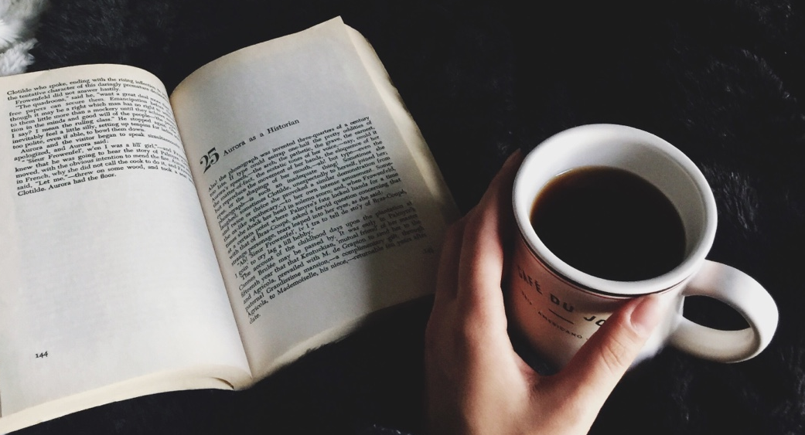
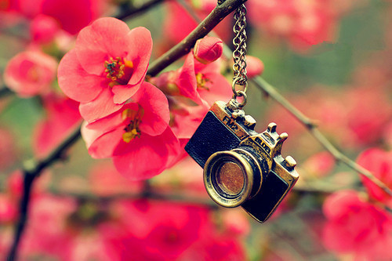

Nascida em Mogi Mirim, interior de São Paulo, Lidia Laís começa a sua jornada como escritora. Desde menina sempre quis fazer a diferença no mundo e demostrar verdadeiramente quem ela é, foi a partir dai que em uma belo dia essa pequena flor desabrochou. De ponta pé, foi uma verdadeira aventura ela entrar nesse mundo, mas ela tem fé e sempre acredita que a vista pode ser ótima. Embarque nessa jornada com ela e sinta os ventos nas pontas dos seus pés.

Desventuras, liberdade e poemas
Viva cada dia como se fosse o ultimo, afinal ,ele é...
Grandes sonhos trazem grandes revoluções...
Quando não estiver claro, leia as entrelinhas...Lidia Lais
Sobre mim
{kind=link}
{kind=link}
{kind=link}
{kind=link}
Voar
A vida é algo incrível e extraordinário. Tão implacável que muita das vezes não nos damos conta do que temos em nossas mãos. Ela é com aquele mar calmo e tempestuoso. É aquele cheiro de café que sentimos pela manhã. É aquela montanha russa que dá partida sem se ver. Viver, é fazer da sua vida uma pequena dádiva, é guardar aquele bem mais precioso em sete chaves. Viver,é ter a certeza de que cada dia será diferente e cabe apenas a você fazê-la ser inesquecível. Viver, é dar passo após passo sem ter medo de cair, é ter a certeza de que o amanhã voltará e com ele virá novas chances para mudar e fazer algo diferente. Viver, é não ter medo de cair e muito menos de se arriscar. Viver, é simplesmente sentir.
Mar
O mar, uma das coisas mais lindas que já vi. Minhas melhores lembranças e aventuras. A minha busca por mim mesma. Foram tantas coisas que não cabem dentro de mim e que resolvem se transformar em um oceano que jorra pelos meus olhos. O mar chega a ser tão lindo e vasto que me faz querer correr pra ele mesmo sem saber nadar. Em ti, vi muitas coisas inclusive a saudade, o amor, a esperança, o companheirismo e a reciprocidade. Sentir a areia quentinha nos meus pés, era semelhante àquele cobertor macio preferido que te esquenta. As cachoeiras, são indescritíveis e até agora tenho buscado palavras para a descrever, tão tempestuosa e ao mesmo tempo calmaria. Sentir tantas coisas ao mesmo tempo e não saber descreve-las é definitivamente a definição de como é o (a)mar.

Deixe ir
Sabe aquele coisa que te prende de uma forma indescritível, que te alegra e te faz ser um alguém diferente. As vezes só consigo pensar se algum dia eu vou realmente conseguir te deixar ir. Parece que tem um pedaço seu em tudo o que faço e vejo, sempre parece que você está lá me esperando do lado de fora. Nunca pensei que fosse sentir tanta a falta de alguém, assim como sinto de você,mesmo estando perto. As vezes chego a imaginar se é você quem está tocando no meu portão, se é em você que eu vou esbarrar a qualquer momento. Mas lembra daquele ditado que o que você mais quer só vai acontecer quando você menos esperar?! Então, escolho te deixar ir, não porque eu não te ame, mas, porque eu sei que é deixando você ir que descobrirei a minha liberdade e quem sabe nessa nova descoberta eu não me esbarre em você novamente?!
Presente
Sabe aqueles pesos que pesam os seus ombros, aquela carga que você sente em suas costas?! Está na hora de você deixar ir. Você merece um recomeço e uma nova história, você merece ter toda a felicidade desse mundo. Você merece o amor de verdade, o amor recíproco, você merece a felicidade, você merece sorrir até as suas bochechas amortecerem, você merece sentir aquela brisa suave de se estar com alguém que te traz paz. Você não merece sofrer, chorar, se magoar, se sentir triste por não conseguir o que você deseja, se martirizar por aquilo que não dependia só de você pra dar certo. Você precisa ser forte e confiar que tudo vai dar certo, confiar que o novo amanhã, aquela nova chance que você tanto espera está chegando. O passado já passou, ele já não te pertence mais, você não pode se prender com as coisas que pareciam que dariam certo mas não foram. Viva o presente, viva o agora,viva intensamente e seja muito feliz.
Lembranças
Penso que essa é a primeira vez que te escrevo, não sei ao certo qual o motivo, mas acredito que já estava na hora de colocar meus pensamentos e sentimentos em palavras e esse momento é agora. Tudo começou quando na verdade eu estava em uma fase de descoberta sobre mim e sobre os meus sentimentos e você foi chegando de mansinho como aquela brisa leve, as ondas do mar e aquela musica que aquece o coração. E assim você veio ganhando os meus pensamentos, sentimentos e também o meu coração. Você chegou tão perto que eu pude enxergar o universo que existe em seus olhos, e admito que me ver sendo refletido neles foi uma das coisas mais bonitas que me aconteceu durante muito tempo. Lembra da primeira vez que os nossos dedos se tocaram?! Não pensei que fosse me acostumar e sentir falta disso. Lembra dos nossos abraços?! Só de pensar já consigo sentir as borboletas dentro de mim. Tantas lembranças, histórias e loucuras que se fosse colocar todos no papel, nos surpreenderíamos em descobrir quantos momentos passamos juntos. Quem dera existisse uma máquina do tempo para podermos voltar e também prolongar os momentos em que estivemos/estamos juntos...
Você
Você me faz bem, você me acalma. Você vem com esse sorriso bobo e me desarma. Estar com você me faz ser um alguém melhor, me faz querer parar o tempo e aproveitar o momento. Com você, eu tenho descoberto que o mundo é bem mais bonito do que eu pensava e que quando tudo fica cinza, em seus olhos encontro o arco íris mais belo que poderia ver e então volto a sorrir. Você foi um dos melhores presentes que eu poderia receber, te ter aqui sempre por perto me faz muito bem e acho que o mesmo acontece com você. E assim seguiremos nosso caminho, levando amores e flores por onde vamos indo e fazendo do mundo um lugar melhor porque quando estou com você, já não me sinto só.